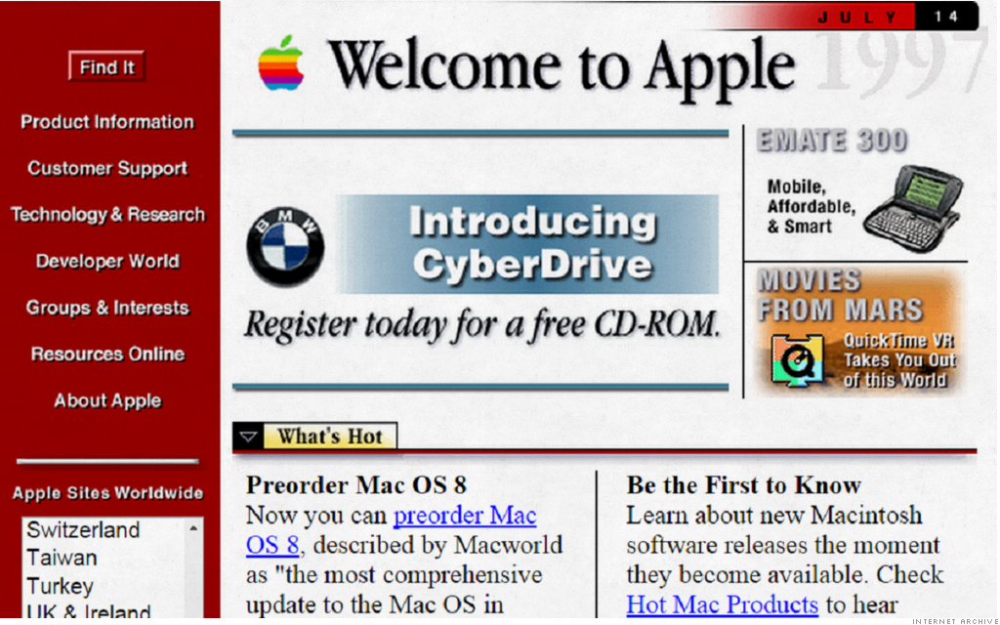

Tangram
landing page web prototype mobile prototypeOverview
The two main functions of a cloud storage are data back-up and instant file sharing.
However, regular users may find themselves struggling with storage space, missing a few new comments on files, experiencing occasional crashes when transferring large files, and trying to declutter their storage — only to find that there are very limited options to how they can align their files.
To tackle these problems, I created a cloud storage prototype that provides flexibility in the organization of files, and can show all new comments at the top of the dashboard. I also include a native tool that can convert and edit videos. Converting videos to native files can free up space. Native files can also be shared instantly without crashes. Since a video-editing app is not commonly found in most of the cloud storages (as of June 2020), this feature may propose a novel method to saving storage space and boosting work productivity.
My roles |
Deliverables |
Methods/ Tools |
|
UX research |
|
|
|
UX/UI design |
|
|
|
Visual design |
|
|
|
Market research |
|
|
|
Branding |
|
|
Problems
|
A |
The transferral of files takes a long time and occasionally crashes. |
|---|---|
|
B |
Most of the cloud storages do not have native apps to support video editing and commenting by timestamp |
|
C |
Users cannot skim through all new comments from different files in the same location from the dashboard. |
|
D |
Most of the cloud storages do not allow users to customize the organization of their files. |
| Concern |
Files stored online may not be as safe as those stored on a USB drive. |
Solutions
-
Solution to A&B
Incorporate a video conversion and editing tool within the cloud storage.

Why is this a solution?
Video files usually take up a significant amount of space. Converting videos to the cloud's native format can free up space. These files can also be shared instantly without crashes.
-
Solution to C
Prioritize unread comments.

-
Solution to D
Provide a flexible way to organize and align files.
-
Solution to the Concern
Create private folders that are password-protected.
User research
Survey
To understand how users and non-users think about cloud storage products, I conducted a survey over 41 people across different countries and age groups.
Frequency of Using Cloud Storage
87.5% of the respondents use cloud storage at least a few times a week. Among them, 60% of them use cloud storage daily.
The main purposes of using cloud storage are:
| 92.7% |
store files |
| 85.4% |
transfer files |
| 53.7% |
real-time collaboration |
Users are primarily concerned about what counts towards storage space, and how fast and easy it is to transfer files.
I also looked at what users like and dislike about their cloud storages.
Appreciation 
Most Appreciated Features
Frustration
Most Frustrating Issues
Concerns
Among the respondents, one of them did not use cloud storage. The main concern of the non-user is data leakage. It is worried that sensitive information will be leaked onto the Internet.
Takeaways
-
Users are mainly concerned about privacy and security issues.
-
Some people prefer using USB to cloud drive when transferring sensitive files or large files.
Potential Trends
In the survey, I also looked at what other functions people want to have in their cloud storage. Many of them mentioned “video-editing tools”, “saving videos”, and “video conference”.
Personas
Based on the demographic information of my respondents, I created 2 personas.
|
John Lifestyle: He is a dedicated student. On a daily basis, he needs to rely on cloud storage to store and transfer documents, images and videos for his assignments and his internship. He also enjoys using cloud products to collaborate in group projects. Frustrations:
Wishes:
“Having an organized management platform is key to balancing studies and internships.” |
Phoebe Lifestyle: She is a curious explorer and she loves to share what she sees and learns in her travel journey with her followers online. To capture and create great video content, she stores all the clips she has filmed on her phone and sync them on her cloud so that she can download and edit them whenever she has time. To avoid forgetting important information, she also needs to jot notes alongside her videos and store them on the cloud. Frustrations:
Wishes:
“Travelling expands your understanding of the world and enriches your memories. Working on a cloud storage allows me to save these great content quickly and easily.” |
User Stories
The goals and frustrations of users can be summarised in the following table:
|
High |
Store and retrieve files anywhere and anytime. |
|---|---|
|
High |
Transfer and edit files from any devices (e.g.mobile, laptop and desktop) by anyone with permission. |
|
High |
To have added security for sensitive files. |
|
High |
To have a video-editing tool alongside other common tools (e.g. word-processing, slides, spreadsheet). |
|
Medium |
To have the option to customize the organization of files (e.g. by name, by last modified) |
Competitive Analysis
1. Cloud Storages
I compared the strengths and weaknesses of Google Drive, Dropbox and Microsoft's OneDrive as they are the top players in the cloud storage field.
|
Free account |
Google Drive |
Dropbox |
OneDrive |
|---|---|---|---|
|
Storage |
15GB | 2GB | 5GB |
|
Customizable organization |
 |
|
|
|
Video-editing |
|
|
|
|
Private/ secure folders |
|
|
|
|
Real-time collaboration |
*On Dropbox, users can organize files by "last modified" or "name".
Takeaways
-
Since none of these cloud storages can satisfy the user's demand of a video-editing tool, Tangram -- having incorporated one -- can potentially stand out in the market.
-
Maintaining better security is still an issue that many cloud storages have to face.
-
Real-time collaboration has become a basic function for all cloud-based tools.
An example of real-time collaboration is to repond to unread comments directly on the file. Let's look at how users check unread comments on Google Drive.
Open from email:
Opening unread comments from email is fast and direct. However, notification emails of unread comments can push important emails down.
Open from dashboard:
This is not ideal. The process is quite involved and users cannot judge in one glance which comments are more urgent.
One way to improve the experience is to show all unread comments at the top of the dashboard so that users can immediately view all of them in one go.
The goal for Tangram:
2. Online Video-editing Tools
One of the problems my product aims to solve is the lack of a cloud-based video-editing tool incorporated in the cloud drive alongside other tools. To understand this market, I compared two popular online video-editing platforms:
|
Pros:
|
Pros:
|
|
Cons:
|
Cons:
|
(To conduct a fair comparison, I focused on the free account of the two service providers).
Takeaways
While these options can provide a decent video-editing experience (and even unlimited exports), they require users to store the videos somewhere online or offline. Also, users cannot jot notes or add comments to the videos by time stamps.
Taking these factors into consideration, I created a bunch of sketches and wireframes.
Sketches & Wireframes
Sketches

Wireframes
User Testing of Wireframes
In the test, I asked participants to describe what they thought the pages were about and explained how to navigate to different pages.
Here is what surprised me:
1. Labels may not be helpful
Although using pattern labels is visually more accessible than color labels, it is not always easy to remember. Besides, some files may take more than one label. For example, an image that was took on a vacation but is used for work-related content can fit under "images", "personal", and "work". Although we can allow a file to carry multiple tags, this design will defeat the purpose of tagging: which is to identify one specific group of files quickly.
2. Systematic but cluttered
Listing out the latest files in each category is systematic but the dashboard looks cluttered.
Here is what I've learned:
Attempt to show everything is to show nothing
My attempt to show all the latest files in each category was to speed up the file-location process. But it makes the dashboard looks cluttered and it is even harder to locate a file.
|
BEFORE |
AFTER |
I learned to show only files which are recently opened.
Mockups
After revising the wireframes, I created a mockup of the product. Here are some of the pages:

User Testing of Mockups
In the test, I asked participants to comment on the visual and functional aspects of the product.
Here is what surprised me:
Framing content: Lines V.S. Colors
While the layout is clean, using borders to organise content can make a website look archiac.
|  |

|
|
|
Apple.com in July 1997 (Credit:CNN) |
Apple.com in July 2020 |
Color Combination
Color combinations that blend well in the nature do not always translate to the same effect on screen.
What I've also learned:
Web Design V.S. Poster Design
Although the intial design contains buttons, it looks more like a poster than an interactive website.
|
BEFORE |

AFTER |
I learned that it is crucial to add visual cues which can trigger users to click the interactive elements to explore the page.
Branding
Name
|
To highlight the diverse tools available on this cloud platform, I chose the name ‘Tangram’. A tangram is a puzzle of 7 pieces which can be grouped together to create different objects. Similar to a Tangram puzzle, our cloud storage platform aims to provide different tools for users to achieve different project goals. In short, Tangram values creativity, logical organisation, and collaboration. |

Photo credit: Amazon |
Logo
Among the sketches, I chose the one with an abstract "T" shape surrounded by a circle. The "T" shape is composed of four tangram pieces. The design is meant to reinforce the idea of collaboration and creativity.
Colors
|
In the user survey, those who frequently use cloud storages are between 20 and 40 years old. The chosen set of warm colors is meant to show friendliness and acceptance to new ideas, which is generally embraced by the target group. |
Typography
|
I chose “Futura” as the brand’s typeface. Its geometric style is modern and legible. A round typeface can also suggest friendliness. I chose “Roboto” as the complementary typeface as it is highly legible across large and small prints. |

|
Interactive Prototype
Based on the respondents’ feedback, I revised the design and created the following prototypes:
1. Landing Page
|
|
I enlarged the caption in the hero image to draw the user’s attention to the brand. |
I also added a carousel at the top of the page to display the product’s features:

Deep down, we know that not every user has time to skim through the entire page. The carousel is meant to showcase the unique features of this product in one go.
The clickable post-it notes aim to pique the users’ curiosity to explore different features. When the user clicks on the post-it (or the arrows), the hero image will morph into the next one. This animation adds a little reward to every click.
2. Dashboard
|
|
After removing the borders and refined the color scheme, the product appears more modern. I also applied a bright red to highlight the number of unread comments.
3. Video-editing Page

|
This platform provides basic functions for editing and exporting video clips. Users can jot notes or add comments to the video precisely by timestamps:
This makes collaboration easier.
To learn more, click on the prototypes below:
landing page web prototype mobile prototypeReflection
Despite the growing number of products that provide online storage (e.g. Instagram, Slack, etc.), rarely do they market themselves as cloud storages. Being able to store data online has gradually become an expected function for web-based products or apps. To make Tangram stand out, I added a video-editing tool and introduced a more flexible way to customize file-organization. But to remain relevant in the market, I must constantly update my understanding of the trend and the user's needs (as shown the user testings above).
If I can push it further, I would incorporate a checkbox and a search bar above each column on the dashboard. This can allow users to perform quick searches or mass edit files (e.g. to share or to delete them). I would also add a dark mode to my cloud storage. This can soothe the eyes of users who prefer to (or have to) work in darker environment.